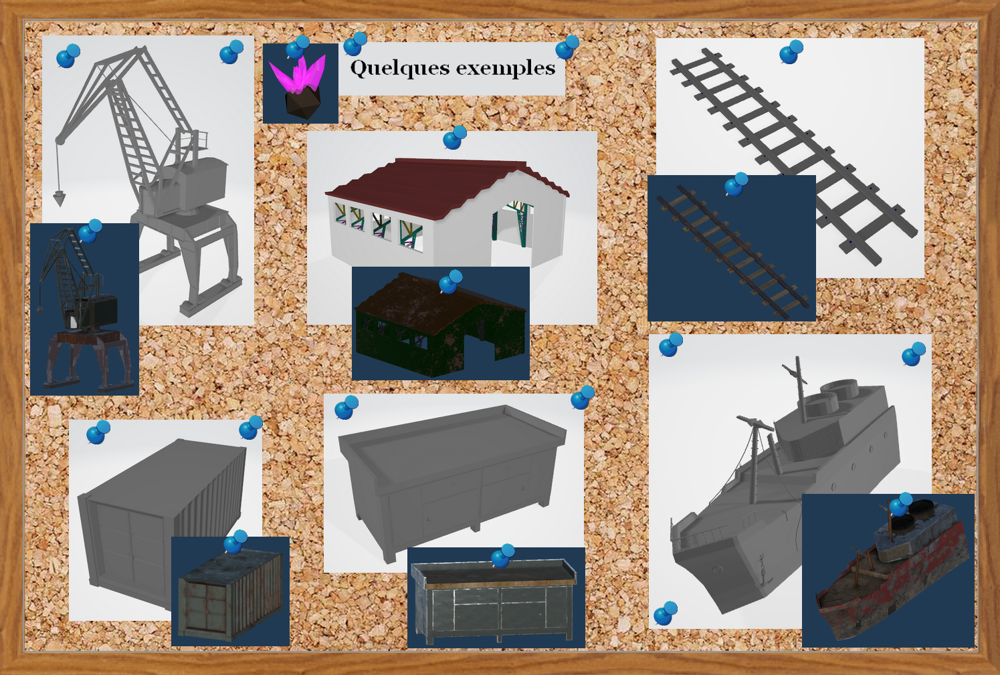

Incarnez un petit robot qui n'a pas conscience du monde dans lequel il se trouve.
Il mine, récolte des débris de robots, et ramène cela à la base.
Un quotidien de robot, répétitif et peu intéressant.
Un mystère dans le hangar...
Pour sortir de cette boucle, Evo à la capacité d'interagir avec ses semblables mais un jour, il dévie de son chemin.
Aussi intriguant que divertissant, Evo se décide à s'émanciper de son programme originel, ce qui lui montre une nouvelle perspective,
il développe alors une certaine créativité et s'ouvre au monde inconnu de la modélisation 3D, en observant d'un regard nouveau ce qui l'entoure.
Il se rend alors compte des possibilités infinies qui s'ouvrent à lui.
Que fera-t-il de cette liberté qui assaillit ces programmes ?
Que va-t-il découvrir ?
Par des minis jeux, faites découvrir à Evo les étapes de la conception 3D qui n'est autre que sa propre conception.
Comment jouer ?
Interaction avec le Décor
- Il faut faire un clique droit pour récupérer des minerais.
- Il faut faire un clique droit pour parler avec les autres robots.
- Il faut également faire un clique droit pour déposer les éléments dans la base.
Interaction avec les robots
Les robots vous suivent dès que vous sortez de la zone principale et vont chercher des minerais pour les ramener à la base.
On peut également parler avec certain.
Mouvements du Personnage
- On se déplace avec les touches Z/Q/S/D ou les flèches directionnelles.
- On peut ramasser des minerais (clique droit) ou des cartes de robots pour pouvoir s'améliorer.
Les Mini-jeux
- Il y a un jeu qui permet de déplacer des vertices pour
- Il y a un second jeu qui consiste à placer des pièces dans le bon ordre.
La zone principale
Cette zone permet de faire les mini-jeux pour pouvoir progresser dans le jeu, ainsi que poser les minerais et les cartes de robots sur l'établi présent dans le hangar.
Assets
Les ressources créées par les Producteurs 3D est ce qui constitue en grande partie tout le jeu. Les assets ont été faits main, ainsi que les textures. Tous les éléments respectent les conditions : être en LowPoly et avoir des textures réalistes. Chaque élément vient apporter du contenu et met bien dans l'ambiance du jeu.

Les ressources créées par les Développeurs sont aussi très importantes, chaque script permet de pouvoir s'émouvoir dans le jeu et voir chaque détail, chaque élément présent dans l'environnement. Tout a été pensé pour proposer au joueur une immersion dans le jeu et une envie de découvrir.
Un exemple de mini-jeu
Déroulement du projet
L'équipe d'EvoBot
Chef de Projet : Julie TROUCHKINE
Chef Projet DEV : Mickaël DAUPHIN & Rémy CRESPE
Chef Projet PROD : Lucas HENRICH & Tristan SATRE-VIAL
Level Artist : Marine DOMAS & Matthias BOURCY
Level Design : Nathan LEFEBVRE & Thomas RIVATON
Lighting Artist : Julie RICOU
NPC : Romuald AUCOUTURIER & Pierre LIPPENS & Antoine LEBLOND
User Interface : Laurine REDIN & Laura MALLEM
User Expérience : Lino BLONDELLE & Axel GUIRAO
Complémentarité de l'équipe
Au niveau des membres de l’équipe il y a eu des complémentarités entre le Lighting Artiste et les NPC pour créer l'ambiance des robots, notamment les phares.
Il y a aussi eu des interactions entre les Levels Artists et les différents corps développeurs pour garder une cohérence et produire les assets souhaités.
Le déroulement dans le temps
Le projet s'est réalisé sur 4 semaines. Les 3 premières semaines ont servi à la réalisation et l'intégration de tous les éléments (Assets et Scripts) pour réaliser une application fonctionnelle qui correspond à ce qui était voulu.
Les 36h consacrer au Développement on était mis à profit ainsi que du temps personnel, et c'est de même pour les modélisateurs qui eux avaient 48h de cours consacré à ce projet et leurs temps personnels.
Le contexte
Ce projet a été réalisé lors du Semestre 4 à l'IUT au département Informatique du Puy-en-Velay. Il a été demandé par un professeur de l'IUT et réalisé en groupe de 17 (pour le projet EvoBot et 19 pour le deuxième projet proposé REEM).
La gestion du temps et de l'équipe a été très important et grâce aux nombreux projets réalisé dans cet IUT nous avons pu nous organiser plus facilement que lors de nos premiers projets en 1ère Année.